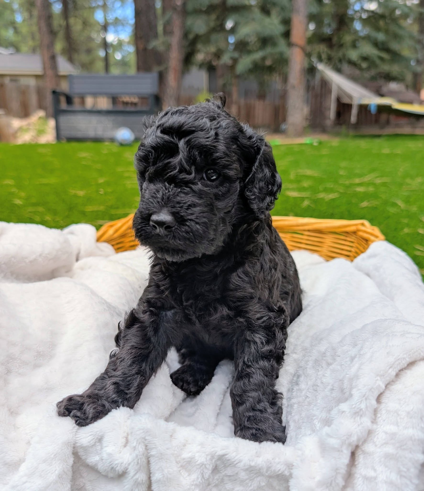
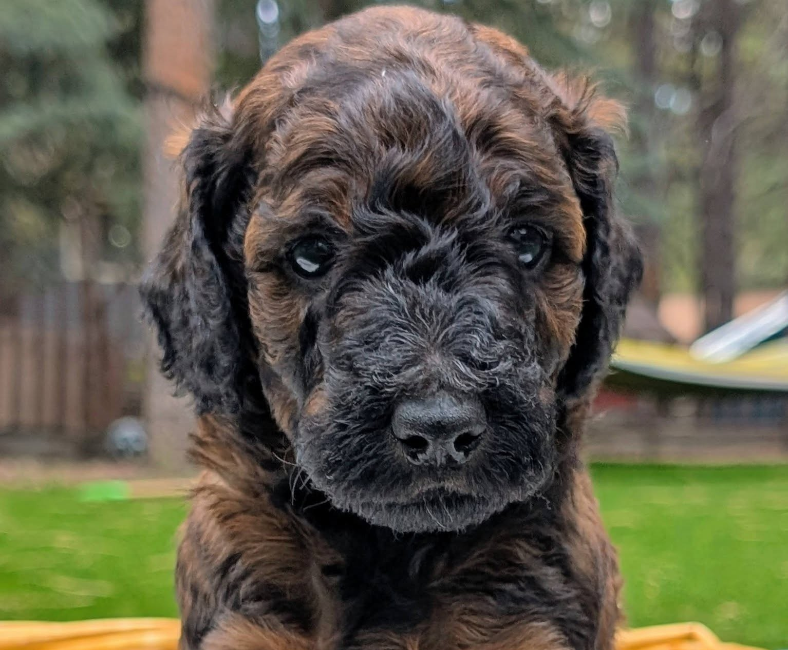
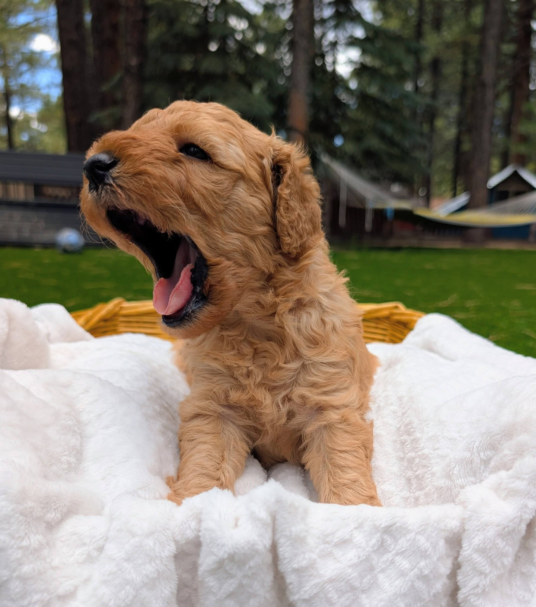

Chunkey Monkey is our heaviest little puppy at birth, hence his name! He seems to always be happy to nurse and is always quiet. His coat is so shiny and intense red. He melts in your arms to snuggle and weighs 15.6 OZ

Cherry Garcia, our vibrant black female puppy. Despite being the runt of the litter, she has shown that she has more energy than any of her littermates. While I know genetics heavily shape a dog's temperament, she is already showing all the classic signs of a typical runt—sweet, feisty, and incredibly loyal.

Rockey Road was the first one born in his litter and is so laid back. He’s frequently found on his back sleeping and relaxing.

Cookie Dough is our biggest female. She has a cream coat and is the lightest in color amongst her litter mates. She is spunkey and always finds her nipple first.